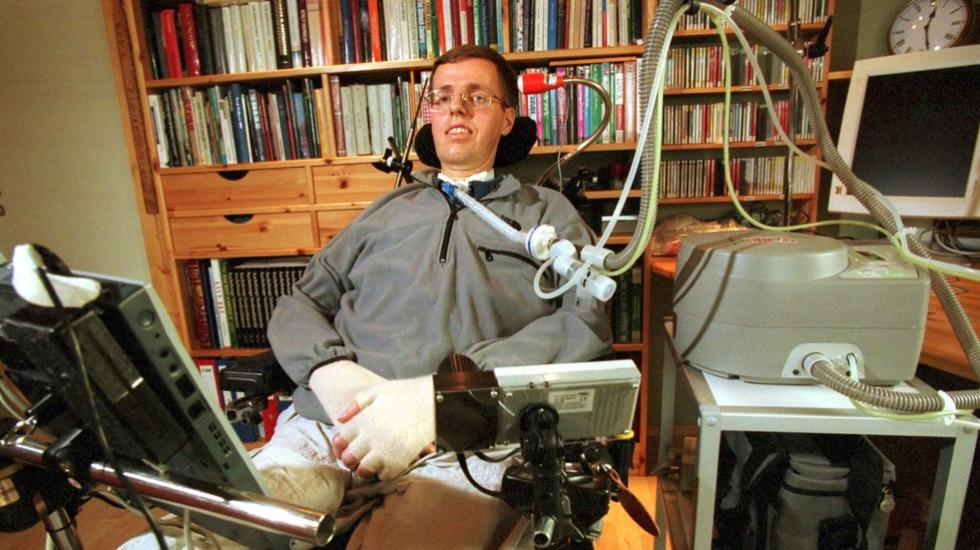
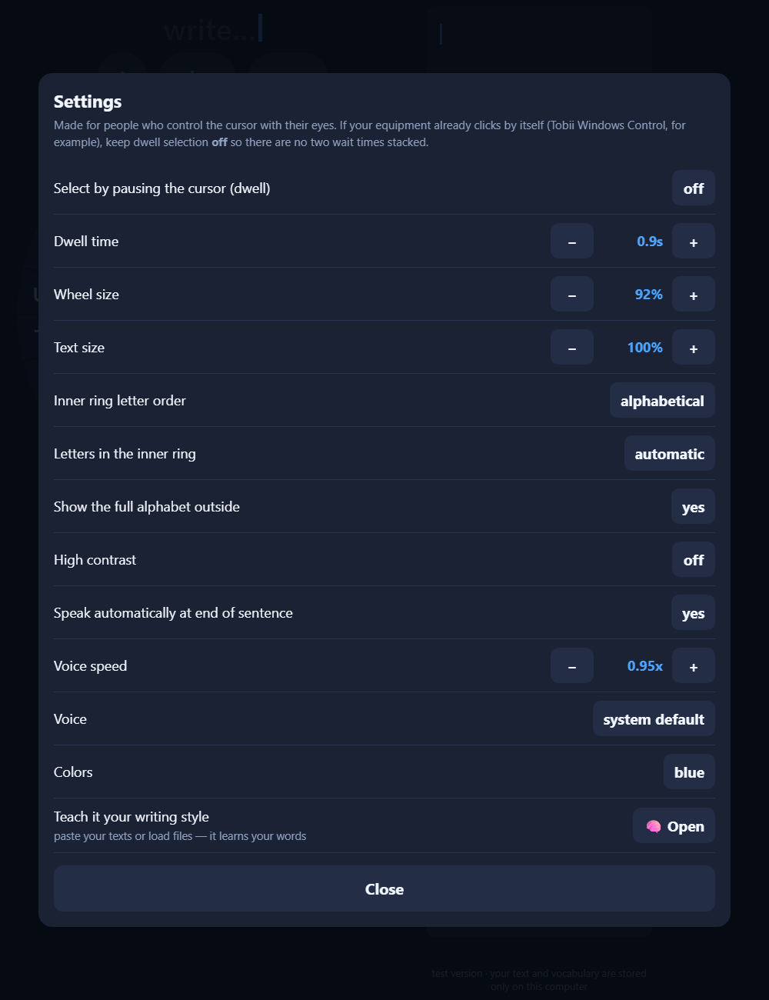

Gazetyping is easier.

Per Villand lived with ALS and communicated through a computer controlled by his eye movements. Photo: Sigmund Krøvel-Velle / Hallingdølen, CC BY-SA 4.0.
The common on-screen keyboard is a copy of the physical keyboard — a layout created for typing with 8–10 fingers. With a cursor you have one pointer, and speed is decided by how far it has to travel between keys. A circle is the natural shape for that: every key sits close to the center, so the average distance per selection is as short as it gets.
The full alphabet stays on the outer ring, always in the same position. The inner ring shows only the letters likely to come next, large and near the center. The center is a rest zone — a dead area where the cursor can park without triggering anything.
Everything the app needs from your equipment is cursor movement. If your device only moves the pointer, turn on dwell selection and set the dwell time. If it already clicks by itself (like Tobii Windows Control), keep dwell off so there are no two timers stacked. Wheel size, text size, letter order, contrast, colors, voice and speed are all adjustable:

The settings screen.
People with ALS, cerebral palsy, high spinal cord injury, brainstem stroke, advanced multiple sclerosis or muscular dystrophy — any situation where speech is gone and hands don't reach the keys.
Also for people temporarily without a voice: intubated or tracheostomized ICU patients can usually move one finger on a screen. This runs on any tablet the hospital already has.
The keyboard comes in English and Portuguese — same version, same features.
Nothing you write leaves your computer. Learned vocabulary, saved phrases and settings are stored in your own browser, and you can export a backup file at any time. No text is sent to any server.
GazeWheel is a Free School project. Donations fund early childhood education — scholarships — and more projects like this one.
Talk to us about donating{kind=link}